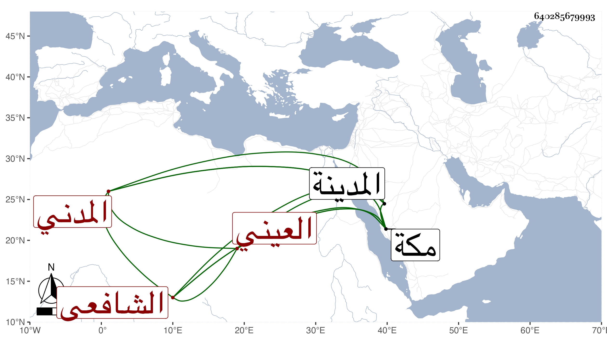

0902Sakhawi.DawLamic.ITO20230111-ara1.EIS1600.640285679993
Biography ID: 640285679993
78
أحمد بن علي بن عمر بن كنان شهاب الدين العيني الأصل المدني الشافعي والد الفخر يعني الآتي هو وأبوه أيضا كان يذكر أنه ينتسب للزبير بن العوام ووصل نسبه به . ولد بالمدينة ونشأ بها فحفظ القرآن وغيره وقرأ على ابن الجزري طيبته من حفظه وأجاز له وكذا سمع على النور المحلى سبط الزبير في سنة عشر بعض الاكتفاء للكلاعي . وكان خيرا متعبدا منجمعا عن الناس كثير التلاوة تحول في آخر عمره لمكة فدام بها إلى أن مات في يوم الاثنين ثامن عشر ذي القعدة سنة تسع وستين بمكة ودفن بجوار والده في المعلاة رحمه الله وإيانا .
